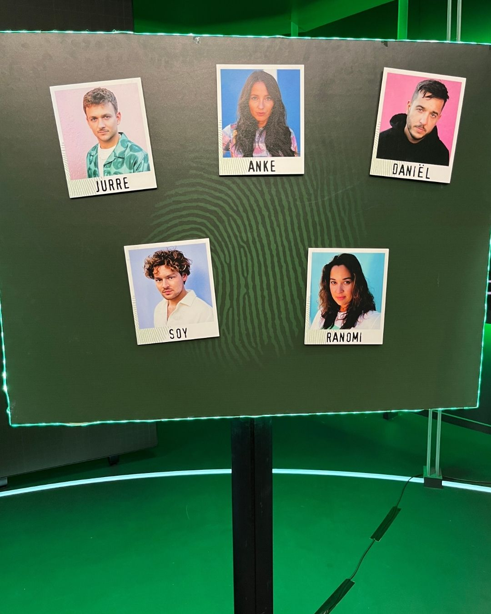
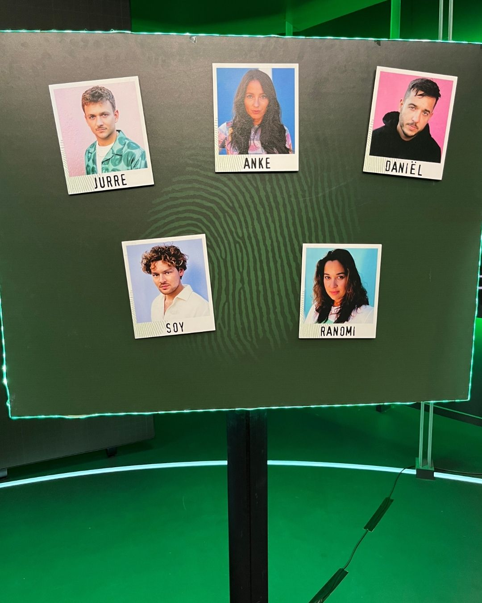

Assistent-Producer
Feb, 2023 - March, 2023 • Internship • Hilversum, NL
Mollenstreken
During my internship at AVROTROS, I worked on the fourth season of Mollenstreken. The series was often filmed right after new episodes of Wie is de Mol?, with same-day editing and broadcast. This fast turnaround taught me how to stay flexible, meet tight deadlines, and perform under pressure. My tasks covered both editorial and productional work, contributing directly to the on-air content.
Watch episodes via:
As editorial and production assistant, I played a key role in ensuring production efficiency and creative consistency.
- Supporting concept development and research;
- Preparing and creating props for filming;
- Assisting during shoots and coordinating logistics;
- Collaborating on script ideas and last-minute production adjustments.